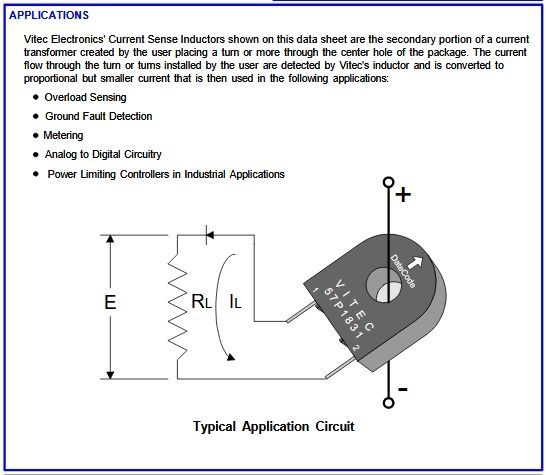

Background:
I have a bunch (20+) of these current sensors (57P1820G) left over from an old model railroad project with my son where we made a circuit that sensed the current of an oncoming train and switched the crossing lights on based on a threshold value (tiny pot).
Ideas:
I'm thinking of the many cool ways in which these might be used in both analog and analog/digital projects and wondering if anyone has done/tried this.
Basics:

And a link to the full spec doc: http://www.viteccorp.com/data/CatalogSensing.pdf